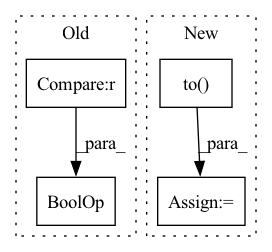

Pattern ID :14198
Before Change
optimizer = optim.Adam(net.parameters(), lr=lr)
// WandB magic
if starting_epoch == 0 and (device=="cuda" or device=="cuda:0" or device=="0") :
try:
wandb.watch(net, log_freq = 100)
except:After Change
// dim = 0 [30, xxx] -> [10, ...], [10, ...], [10, ...] on 3 GPUs
net = DataParallelPassthrough(net, device_ids=config["device_ids"])
net= net.to(device=device)
optimizer = optim.Adam(net.parameters(), lr=lr)
// WandB magicIn pattern: SUPERPATTERN
Frequency: 4
Non-data size: 4
Instances Fragment ID: 47243090
Project Name: aangelopoulos/im2im-uq
Commit Name: 4f4c3450295e67f2d2c5b91db7bd5bde5ca5c6c8
Time: 2021-06-24
Author: angelopoulos@n0024.abc0
File Name: core/scripts/train.py
M Class Name: AnonimousClass
N Class Name: AnonimousClass
M Method Name: train_net(12)
N Method Name: train_net(13)
M Parent Class:
N Parent Class:
M File Name: core/scripts/train.py
N File Name: core/scripts/train.py
M Start Line: 147
M End Line: 260
N Start Line: 70
N End Line: 175
Before Change
elif model_str == "cnn":
if args.dataset == "mnist" or args.dataset == "fmnist":
args.model = FedAvgCNN(in_features=1, num_classes=args.num_classes, dim=1024).to(args.device)
elif args.dataset == "Cifar10" or args.dataset == "Cifar100" :
args.model = FedAvgCNN(in_features=3, num_classes=args.num_classes, dim=1600).to(args.device)
// args.model = CifarNet(num_classes=args.num_classes).to(args.device)
elif args.dataset[:13] == "Tiny-imagenet" or args.dataset[:8] == "Imagenet":After Change
num_classes=args.num_classes).to(args.device)
elif model_str == "AmazonMLP":
args.model = AmazonMLP().to( args.device)
else:
raise NotImplementedError
Fragment ID: 47243092
Project Name: tsingz0/pfl-non-iid
Commit Name: a41f7bac0e2596d45d01efde38abb0613984d930
Time: 2022-11-30
Author: 2719584131@qq.com
File Name: system/main.py
M Class Name: AnonimousClass
N Class Name: AnonimousClass
M Method Name: run(1)
N Method Name: run(1)
M Parent Class:
N Parent Class:
M File Name: system/main.py
N File Name: system/main.py
M Start Line: 70
M End Line: 134
N Start Line: 53
N End Line: 141
Before Change
def focal_loss(alpha=None, gamma=0., reduction="mean", ignore_index=-100,
device="cpu", dtype=torch.float32):
if not ((alpha is None) or isinstance(alpha, torch.Tensor)) :
alpha = torch.tensor(alpha, device=device, dtype=dtype)
fl = FocalLoss(After Change
if alpha is not None:
if not isinstance(alpha, Tensor):
alpha = torch.tensor(alpha)
alpha = alpha.to(device=device, dtype=dtype)
fl = FocalLoss(
alpha=alpha,
gamma=gamma, Fragment ID: 47243093
Project Name: adeelh/pytorch-multi-class-focal-loss
Commit Name: d66a6b0e0e2987691e6c2065ea60166bf5b20864
Time: 2020-11-16
Author: adeel.hassan93@gmail.com
File Name: focal_loss.py
M Class Name: AnonimousClass
N Class Name: AnonimousClass
M Method Name: focal_loss(6)
N Method Name: focal_loss(6)
M Parent Class:
N Parent Class:
M File Name: focal_loss.py
N File Name: focal_loss.py
M Start Line: 90
M End Line: 94
N Start Line: 96
N End Line: 125
Before Change
runs with success, but needs further validation and possibly optimization for lower runtime impact.
if drop_prob == 0. or not training :
return x
_, _, height, width = x.shape
total_size = width * heightAfter Change
uniform_noise = torch.rand((1, C, H, W), dtype=x.dtype, device=x.device)
else:
uniform_noise = torch.rand_like(x)
block_mask = ((2 - gamma - valid_block + uniform_noise) >= 1).to(dtype=x.dtype)
block_mask = -F.max_pool2d(
-block_mask,
kernel_size=clipped_block_size, // block_size,
stride=1, Fragment ID: 47243097
Project Name: feng-lab/pytorch-image-models
Commit Name: 1904ed8fecdb3f37818378421350315d2abf1224
Time: 2020-05-13
Author: rwightman@gmail.com
File Name: timm/models/layers/drop.py
M Class Name: AnonimousClass
N Class Name: AnonimousClass
M Method Name: drop_block_2d(7)
N Method Name: drop_block_2d(6)
M Parent Class:
N Parent Class:
M File Name: timm/models/layers/drop.py
N File Name: timm/models/layers/drop.py
M Start Line: 25
M End Line: 62
N Start Line: 26
N End Line: 69